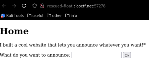
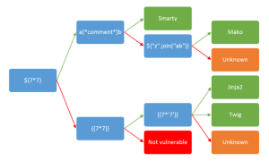

SSTI1
This CTF provided a website.

- First use SSTI payloads to narrow down possible engine (https://github.com/payloadbox/ssti-payloads)
- Narrowed down to jinja2 using:

(
https://github.com/swisskyrepo/PayloadsAllTheThings/tree/master/Server%20Side%20Template%20Injection#methodology)
- Since the jinja engine is capable of running python, used python one liner to run linux shell commands: {{ self._TemplateReference__context.cycler.__init__.__globals__.os.popen('ls').read() }}
- To list files more clearly ran: find . instead of ls
- Catted flag to get flag: picoCTF{s4rv3r_s1d3_t3mp14t3_1nj3ct10n5_4r3_c001_9451989d}
New info:
Reminder that python can run and create websites by generating dynamic HTML
jinja is just one of the template engines python can use to create said html
because of this it is possible to escape the html and run python and use it to run linux shell commands